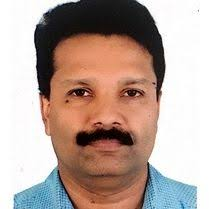
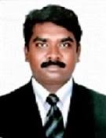

National Institute of Technology Karnataka, Surathkal
Prominent Research Faculty Profiles
The National Institute of Technology Karnataka (NITK), Surathkal has many faculty members with strong research profiles. This page highlights three examples of highly visible researchers whose work is prominently reflected on the NITK IRINS research information system and on institute announcements.
These profiles are not an official "top three" ranking, but sample cases showing high research impact and recognition.

Prof. Arun Mohan Isloor
Professor (HAG)
Department of Chemistry
Research Areas
Membrane technology
Separation processes
Medicinal chemistry
Pharmaceutical chemistry
Nanomaterials
Nanotechnology
Organic synthesis
Crystal engineering
Research Highlights
- Leads the Membrane Technology Laboratory in the Department of Chemistry
- 300+ publications with high citation count on NITK IRINS platform
- Co-inventor on patents related to ultrafiltration membranes and water purifiers
- Associated with faculty startup Apahatech Solutions for water purification technologies
Joined NITK: 10 January 2008
View Department Profile
Prof. Santhosh George
Professor (HAG)
Department of Mathematical and Computational Sciences
Research Areas
Functional analysis
Real/complex analysis
Inverse problems
Ill-posed problems
Numerical analysis
Numerical methods
Mathematical modeling
Applied mathematics
Research Highlights
- Hundreds of publications with significant citation record on NITK IRINS
- Active Google Scholar and IRINS profiles showing strong research impact
- 28+ years of professional experience with 15+ years at NITK
Joined NITK: 12 February 2008
View Department Profile

Prof. Raj Mohan B.
Professor
Department of Chemical Engineering
Research Areas
Air pollution control
Separation technologies
Wastewater treatment
Water quality monitoring
Bioremediation
Biosynthesis
Nanoparticles
Research Highlights
- Recipient of Professor Satish Dhawan Young Engineer State Award 2021
- 50+ research publications on pollution control and environmental solutions
- Research focuses on particulate pollution, CO₂ sequestration, and nanoparticle synthesis
- Long association with NITK, progressing from Lecturer to Professor